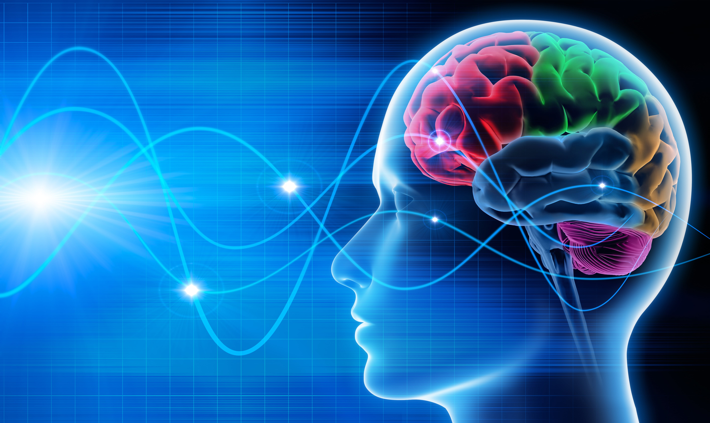
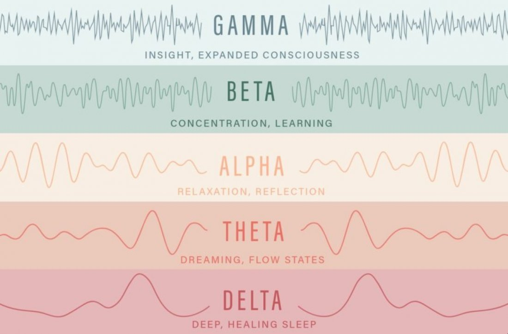

Brainwaves
1. What is brainwave?
In this day & age, scientists have discovered that there is an electric current inside every person. This current can be found in our brain's concentration cells and such current can be called "the electric power plant".

Brain waves are generated in a human's brain via the process of receiving and executing information of life. Since he/her is still in mother's womb until death, that person would emit brain waves that are appropriate within his life's specific moments, such as daily activities, dreams, memories,... Those tasks all create brain waves.
Each brainwave is an expression of a human's distinct daily basis work; Each action, each decision will generate wave length..
Concurrently, there can only be one type of brain wave spawned in our brain. The brain itself will not generate two different brain waves at the same time, therefore you shouldn't listen to 2 audio sources with different wave lengths..
2. How many types of brainwave are there?
Brainwaves are diverged into 5 categories (ranging from lowest frequency to highest): Delta, Theta, Alpha, Beta and Gamma.

- Delta (0.5 - 4 Hz): boasts the perks that help produce deep sleeps or NREM sleeps, secrete hormones that help balance body's biological activities, for example, boost cardiovascular system, digestion, even breathing,... Thereby boost the healing process and stamina regenaration when our brain falls into this deep sleeping state. That's why deep sleeps are such essential for health renourishing.
- Theta (4 - 8 Hz): brings your brain to a deep meditation realm, stable within the mind when you are distorted by multiple problems which require concentration to resolve. Moreover, it helps to fall asleep effortlessly. Thereby, when mind and mentality is relieved, creativity and learning capability are advanced.
- Alpha (8 - 12 Hz): helps our mind state to be relaxed as when meditating, appeases anger, returns our body to ease. Additionally, it offers stress reduction and anxiety, relieves nerves stress,… This is by far the best state to think, work, conduct complicated tasks, absorb knowledge and store statistics to our mind,...
- Beta (12 - 30 Hz): this wave only appears when we are fully devoted to handle challenges, to deduce and to make a decision. Its impact on the left hemisphere gives a hand on boosting focusness and memorizing. Another merit of this wave is enhancing brain's sharpness, which helps producing more logical resolutions.
- Gamma (30 - 120 Hz): activates brain's functionalitiy fully, connects throughout all senses leading to high-level conciousness. As a result, knowledge is soaked into our brain without a hitch.
3. Advatages of brain waves music
Brain wave music is nothing new under the sun. Many researches have pointed out that the melody of this music genre were used in religions' rituals from Bronze Age. When it comes to Ancient Greece, Pythagoras crafted distinct melody methods from an instrument called Lyre that helps ease a provoked individual. Since then, music has been perceived as a remedy for negative emotions.
In 1930, researchers have found out that all human thoughts are results of a special wave. More detailed conclusions were carried out in 1960, that stated each intellectual mode (sleeping, working, creativity, concentration, depression, …) all emit a peculiar wave. This had broadened visions in psychology when scientists and experts could utilize frequency to balance a person's mood. Up until the 70s, when sound waves are encrypted on primitive digital devices, brain wave music was actually born and become distinguished.
For many years, brain wave music has proved to be effective in terms of regulating mental status and emotions. The easiest benefits to notice from brain wave music are the cure of insomnia and anxiety. Doctors even aid patients with brain wave music to calm their psyche during depression treatment sessions. What's more, this genre is considered an efficient tool to help better meditaion.
Chính vì mỗi hoạt động của chúng ta đều gắn liền với một loại sóng não đặc thù, chúng ta nên chọn loại nhạc phù hợp với nhu cầu.
4. Things to keep in mind when listening to brain waves music
- If you are a beginner, aim to practice for 10 - 15 minutes a day. Gradually you can go for 30 minutes, an hour, or several hours.
- Stop listening immediately if you feel drowsy or nausic.
- You should equip headphones to help the music have a direct impact to your brain. If using external speaker, the waves can be distored by surrounding sounds and lose its effectiveness.
- You may have seen some websites promoting only people older than 26 yield results from brainwave music for their brains have been fully developed. Currently, there are no scientific researches that prove brain waves music has a negative effect to our brains..
The truth is there are plethora of people started listening to this type of music at a young age, and they've never mentioned the demerits of it ever since.
You can examine comments related to brainwaves theme from multiple social networks (Youtube, Facebook,...).